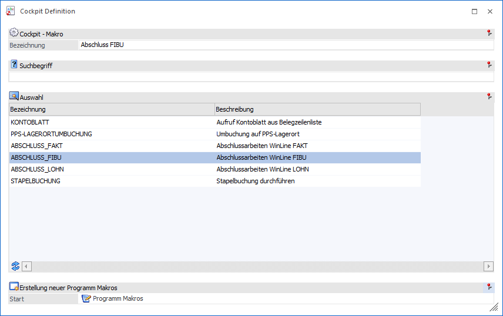
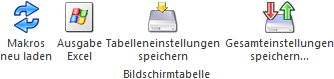

Mit dem Element "Makro" kann ein Makro gestartet werden, welches innerhalb der WinLine aufgenommen oder programmiert wurde. Ein Makro dient dazu, gewisse Arbeitsabläufe zu automatisieren.
Hinweis
Makros können in der WinLine über die Makro-Buttonleiste aufgenommen werden.
Achtung
Für die Hinterlegung von Makros im Cockpit ist es wichtig, dass die Makros so aufgenommen werden, dass sie immer vom Programm WinLine START (bzw. WinLine INFO bei INFO-Cockpits) aus abgearbeitet werden können. D.h. im Makro sollte auch der Wechsel von WinLine START in die entsprechende Applikation mit aufgenommen werden, damit der Aufruf auch vom Cockpit aus funktioniert. Fehlt der Aufruf der Applikation, dann wird das Makro entweder falsch abgearbeitet (falscher Menüpunkt wird aufgerufen) oder scheitert bereits am Menüaufruf.

Die folgenden Einstellungen können vorgenommen werden:
Ø Bezeichnung
Eingabe der Bezeichnung, welcher in weiterer Folge im Cockpit angezeigt werden soll. Die Bezeichnung wird aus dem gewählten Makro übernommen und kann nachträglich noch verändert werden
Ø Suchbegriff
Durch Eingabe und Bestätigung eines Suchbegriffs wird in allen Makros gesucht und die Tabelle der Makro-Auswahl entsprechend gefüllt.
Ø Makro-Auswahl
Mit Hilfe der Tabelle "Auswahl" wird definiert, welches Makro vom Cockpit aus gestartet werden soll.
Ø Programm Makros
Durch Anwahl des Buttons wird das Fenster "Programm Makros" geöffnet, in welchem Makros angelegt bzw. editiert werden können.
Tabellenbuttons

Ø Makros neu laden
Mit Hilfe des Buttons "Makros neu laden" wird der Inhalt der Makro-Tabelle neu aufgebaut.
Ø Ausgabe Excel
Durch Anwahl des Buttons "Ausgabe Excel" wird der Inhalt der Tabelle an Microsoft Excel übergeben.
Ø Tabelleneinstellungen speichern
Die Spalten einer Tabelle können grundsätzlich an beliebige Positionen verschoben, bzw. in der Breite entsprechend angepasst werden. Durch Anwahl des Buttons "Tabelleneinstellungen speichern" werden die Einstellungen benutzerspezifisch gespeichert und bei dem nächsten Aufruf des Programmpunktes wieder vorgeschlagen.
Ø Gesamteinstellungen speichern
Im Gegensatz zu "Tabelleneinstellungen speichern" können mit "Gesamteinstellungen speichern" mehrere Tabellenaufbauten gespeichert und nach Wunsch geladen werden. Zusätzlich werden Sonderfunktionen der Tabelle (z.B. "Spalte gruppieren") ebenfalls bei der Speicherung bedacht.